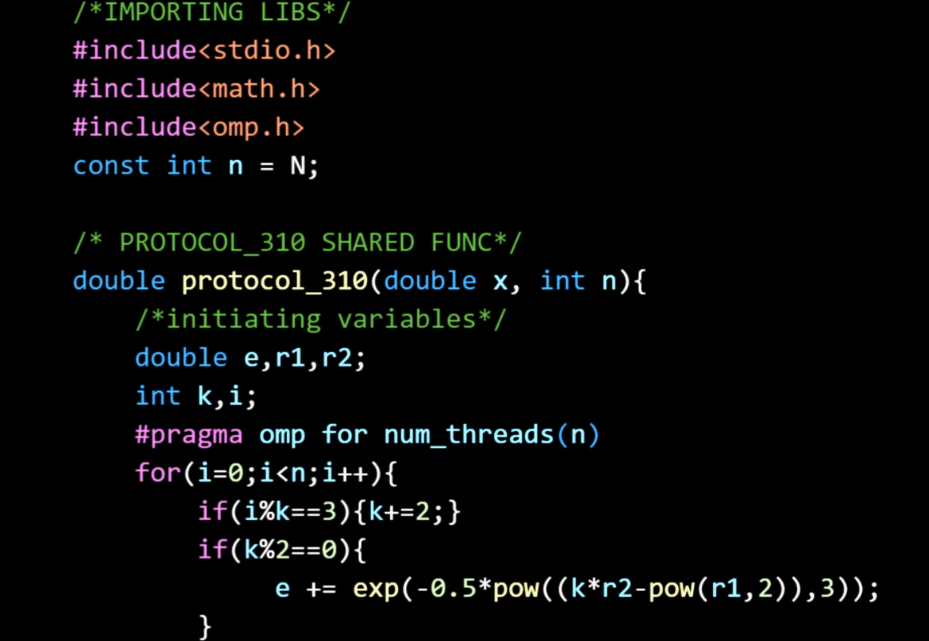

ABHINAV YUKTH S
RESEARCHER
PHYSICS | DATA-SCIENCE
Indian Institute of Science Education and Research Thiruvananthpuram

I am a BS-MS student from IISER Thiruvananthpuram, currently pursuing my research in Theoretical Condensed Matter and Statistical Physics. I am profoundly drawn to the depths of data science, machine learning, and statistics.
PROJECTS
Numerical Simlation of Gamma-Ray Burst in Wolf-Rayet Progenitor Stars
Long gamma-ray bursts (GRBs) are widely believed to originate from the rapid core collapse of massive Wolf–Rayet stars, culminating in the formation of a black hole. In this study, we conducted two-dimensional relativistic hydrodynamic (RHD) simulations of a long GRB jet using the PLUTO 4.0 code to investigate the conditions, like spin of the black hole, under which relativistic jets successfully break out of the stellar envelope of Wolf–Rayet progenitor stars. Further we determined the Jet Breakout time for different black hole spins and compare the results with the existing numerical model. For the simulations presented herein, the stellar envelope is modeled as static, non-rotating, and non-magnetized, with prescribed radial density profiles. A relativistically hot cylindrical jet is injected through a nozzle oriented along the z-axis at a specified height zbase, characterized by an initial bulk Lorentz factor. The jet is further defined by its luminosity (Lj ), specific enthalpy (hj ), and opening angle (θj ). An accretion-powered jet launching mechanism is incorporated into the star–jet system.


Variational Monte Carlo Method on Hubbard Model
Structural Optimization of Carbon Cluster using Swarm Intelligence
We employed Particle Swarm Optimization (PSO) to refine the structural configuration of carbon clusters, aiming to identify the most energetically favorable arrangement. To evaluate the potential energy of the system, we utilized the Tresoff-Brenner potential, which offers a comprehensive description of interatomic interactions in carbon-based systems. The primary objective of the structural optimization process was to determine the lowest energy configuration, thereby ensuring that the carbon cluster adopts the most stable arrangement. This optimization technique is essential for understanding the fundamental properties of carbon materials at the atomic level and provides insight into their potential applications in various fields.

Molecular Dynamic Simulations
Through this project, I gained hands-on experience with Molecular Dynamics (MD) simulations, focusing on the NVE (Microcanonical) and NVT (Canonical) ensembles. C programming was used to implement and optimize the simulations, ensuring efficiency in running complex calculations over extended periods. One critical aspect was constructing a hybrid Lennard-Jones-Yukawa (LJ-Yukawa) potential, which integrates the advantages of both the Lennard-Jones and Yukawa potentials to accurately model interactions in diverse systems. Through parameter estimation, the necessary coefficients for the hybrid potential was determined, ensuring precise interaction representation. Given the computational complexity, it was essential to optimize the code for performance, enabling the simulations to handle large datasets and produce results in a reasonable timeframe. Subsequently, NVT simulations to investigate the system's physical properties was conducted, focusing on phase transitions. This analysis provided essential insights into the thermodynamic behavior of the system, enhancing the understanding of molecular-level processes and material properties.
Dynamics of Glassy and Disordered systems under shear
This project focuses on the analysis of superfluid dynamics, specifically exploring caged dynamics and cluster behavior in various colloidal systems. We performed Topological Cluster Classification (TCC) analysis to examine the structural evolution and identify the proportion of different clusters within the system. By conducting simulations at varying temperatures, we investigated how the proportion of these clusters changed, providing insight into the temperature-dependent behavior and transitions in the system. Furthermore, we analyzed the stability of the clusters, assessing how they persist or disassemble under different thermodynamic conditions. We studied at different temperature how the proportion changes, stability of clusters, and their dynamics. This detailed investigation helped to uncover the complex interactions and behaviors governing superfluid systems at the microscopic level, offering valuable insights into the stability and dynamics of clusters in superfluid colloids.

TECHNICAL SKILLS
C
x86/x86_64 asm
C++
Python 3
Lammps
Ovito
Web Dev
Tableau
TensorFlow 2.0
HOBBIES AND SIDE PROJECTS
Node Network
A simplified, less user-intensive SSH-like local network communication protocol is designed to facilitate seamless interaction between systems. This protocol is capable of automatically constructing hierarchical network architectures, enabling efficient management of server-client communication and data transfer. By automating the network structure, it enhances the scalability and robustness of communication, ensuring effective handling of increased server-client interactions and data throughput. This approach minimizes manual configuration, streamlining the setup process, while ensuring reliable and efficient data exchange across interconnected systems within a local network.

🗙
pyXlR8
PyXLR8 is a Python library that allows users to seamlessly write, compile, and execute C code directly within Python scripts. It provides an easy-to-use interface for compiling C code snippets, making it ideal for projects that require the integration of C code functionality into Python applications making the program faster. Python function with c-code snippets in function doc strings allows the function to be compiled directly and the function is changed in global namespace to foregin function that calls a dynamically linked shared object. The C compiler flags and optimization levels can be controlled.
Optimized Tersoff-Brenner Potential Implementation
CONTACTS
Phone: +91 8089410513
Email: abhinavyukths21@iisertvm.ac.in
Email: abhinavyukths@gmail.com
Github: www.linkedin.com/in/abhinavyukth-suresh
LinkedIn: www.github.com/Abhinavyukth-Suresh